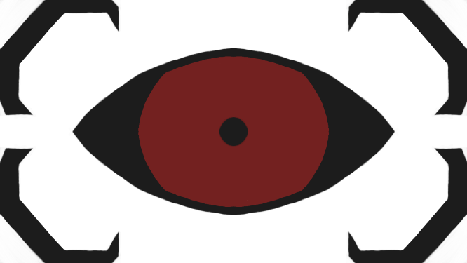

i am an aspiring software developer with a heart of dreams, mind overflowing with ideas, and a gut full of Dr. Pepper. Most of my ideas include the creation of various types of video games that i would like to have existing, but don't as of the moment due to me not having the skills needed to make it happen.
my favorite story story to have ever witnessed is Homestuck, which is a very complicated and ridiculous webcomic about a group of kids that play a game and bring the apocalypse to the earth. Also my favorite kind of music is Heavy Metal.